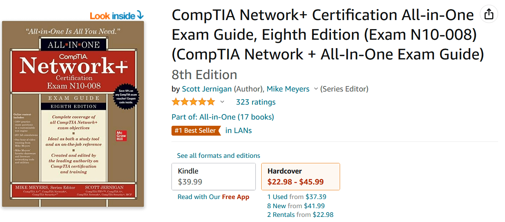
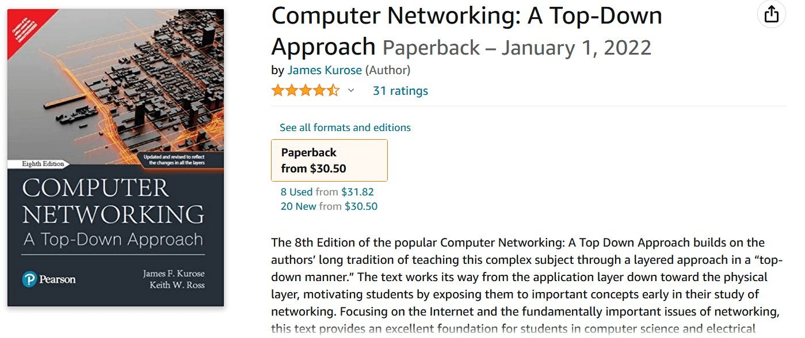
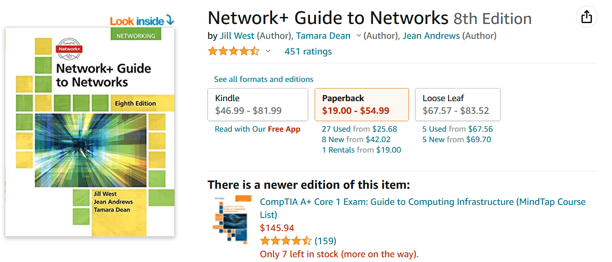

Top 7 Computer Networking Books (2023)
A computer network is a collection of computers that share resources on or given by network nodes using standard communication protocols through digital links. A network connection can be created using either cable or wireless media. Each network that links computers and tools uses hardware and software.
If you are interested in learning computer networking techniques and seeking for a top-notch book to further your networking knowledge, you've found the proper site.
Please keep in mind that this is my personal recommendation and none of the links below are affiliated.
CompTIA Network+ Certification All-in-One Exam Guide
Mike Meyers wrote a book called CompTIA Network+ test guide. One of the greatest books on computer networks, it offers in-depth explanations, practical examples, and hundreds of review questions.
This comprehensive network reference may be used by readers not only as a study aid but also as a useful job reference after the test.
In addition to interactive, hands-on experiments and simulations, this top networking book also offers free video training. You may also become ready with the aid of this reference book for questions on computer networking that are performance-based.
CompTIA Network+ Certification All-in-One Exam Guide
Computer Networking: A Top-Down Approach
The authors of Computer Networking: A Top-Down Approach are James Kurose and Keith Ross. The book uses a layered, "top-down" method to explain the challenging subject of computer networking. The book discusses crucial ideas that will aid your understanding of networking research.
It is one of the greatest books on networking that focuses on the Internet and crucial networking topics. Without delving too deeply into programming or mathematics, it provides readers who desire to explore computer science with a solid foundation.
Computer Networking: A Top-Down Approach
Networking All-in-One For Dummies
Author Doug Lowe has created a book titled Networking All-in-One For Dummies. It is the excellent reference book for both professionals and beginners. The knowledge you need to set up and operate a network is all included in the book.
One of the greatest books on computer networking, it offers comprehensive knowledge on networking in operating systems including Windows 10 and Linux. Additionally, it discusses mobile, cloud, and networking best practices. All the most recent computer networking trends are covered in the book.
Networking All-in-One For Dummies
Cisco Networking All-in-One For Dummies
Computer networking book by Edward Tetz is titled Cisco Networking All-in-One For Dummies. You may learn how to utilize Cisco routers and switches using the material in this book on computer networking. This book explains complex networking concepts like virtualization and database technology in simple terms.
It teaches you how to plan and build Cisco networks, making it one of the finest textbooks on computer networking for novices. This book is an all-inclusive networking handbook that gives you the coverage, options, and best practices you need for this challenging subject.
Cisco Networking All-in-One For Dummies
Network+ Guide to Networks
The authors of the book NETWORK+ GUIDE TO NETWORKS are Jill West, Tamara Dean, and Dean Andrews. Protocols, topologies, network architecture, security, and troubleshooting are all topics covered in the book.
The projects based on virtualization are covered in the best networking book for beginners. The author also discusses his experience with numerous devices, operating systems, hardware, and applications. Topics like "On the Job" anecdotes, Applying Concepts exercises, Hands-On and Capstone Projects are included in the book. The focus on real-world problem solving in the book gives the reader the skills necessary for success in any computing context.
Network+ Guide to Networks
Cisco CCNA Certification
Todd Lammle wrote a two-book set for the Cisco CCNA certification. It offers everything you require in order to pass the CCNA test. The bundle includes the CCNA Certification Study Guide: Volume 2 and Understanding Cisco Networking Technologies: Volume 1.
Additionally, this book set gives you in-depth expertise and fundamental understanding of fundamental Cisco technologies, assisting you in implementing and managing Cisco solutions. These two books cover a variety of subjects to help you study for the test and put your technical skills to use.
Cisco CCNA Certification
Mastering Python Networking
The authors of the book Mastering Python Networking are Eric Chou, Michael Kennedy, and Mandy Whaley. On-network data analysis using the ELK stack and Azure Cloud Networking are covered in the book's chapters. The most recent libraries are included in every chapter along with practical applications.
You will discover information on high-level Python packages and frameworks in this top networking book. Following Azure and AWS Cloud networking, it is one of the greatest books on network engineering that can assist you with network automation chores, monitoring, administration, and improved network security.
Mastering Python Networking
Conclusion
You may improve your ability to think logically and solve problems by learning about computer networking. By making an effort to tackle networking challenges, you may enhance your investigative abilities and solve real-world networking difficulties with ease. Professionals in computer networking have several options accessible to them all around the world. Learning computer networking is therefore advantageous in every way.
Good luck!